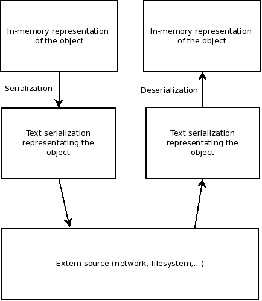

EO's Parallelization with MPI
What is parallelization?
Divide and Conquer paradigm
A difficult problem can be splitted into simpler sub problems.
Therefore the sub problems should be solved faster.
Parallelize.
Process serveral tasks together (concurrent programming).
By different ways :
- Shared memory : Multitask, OpenMP, etc.
- Message Passing Interface : MPI.
- Other ways, undetailed here: coroutines, multi-thread / LightWeightProcess,
Field Programmable Gate Array (FPGA), General Purpose GPU (GPGPU), etc.
Shared memory (e.g : OpenMP)
- Multicore : more than one core per processor.
- Processes several instruction streams together, each one manipulating different datas.
- Different from superscalar processors, which can process more than one instruction during a
single processor cycle.
- A multicore processor can however be superscalar.
- For instance : IBM's Cell microprocessor (PlayStation3)
- Symmetric multiprocessing : More than one processor which communicate through
a specific bus.
- Bus contention is the principal limitating factor.
- The main drawback is explicitly contained in the name.
- Memory is shared
- Bus contention?
- Low memory?
- Use of virtual memory (swap) and page faults?
- => Can slow the speedup compared with the number of processors.
Message Passing Interface (e.g : OpenMPI)
Memory isn't shared here, manipulated objects are sent on a network: there is communication between the machines
(called hosts)
- Cluster
- Several machines network connected (for instance, in an Ethernet network).
- Can have different specifications, but this can affect load balancing.
- Most of the supercomputers are clusters.
- For exemple : Beowulf Cluster, Sun Grid Engine...
- Massive parallel processing
- This is not machines but processors which are directly connected by network.
- Like a cluster, but the networks are specific, so as to wire more processors.
- Grid (a.k.a Distributed Computing)
- Networks with potentially high latence and low bandwith, like Internet.
- Example of programs : BOINC, Seti@home...
A myth about speed: the car's enigma
- If a car has to travel 100 Km, but has yet traveled 60 Km in 1 hour (i.e it has an average
speed of 60 Km per hour), what is its maximal average speed on the whole traject
?

- Some hints:
- The driver can use all the hilarious gas (N2O, nitrous oxyde, a.k.a nitro) he
needs.
- Let's suppose even that the car can travel at speed of light, or teleport (despite general theory of
relativity).
- The solution: 100 Km/h
- The explanation: let's suppose that the car teleports after the first 60 Km. It would have
traveled 60 Km in 1 hour and 40 Km in 0 seconds, which is 100 Km in 1 hour: 100 Km/h.
A myth about speed: "Il dit qu'il voit pas le rapport ?"

- Let P be the parallelizable proportion of the program (~ the remaining distance to travel), which can be
processed by N machines.
- Then 1 - P is the sequential (non parallelizable) proportion of the program (~ the already traveled distance), which
can be processed by 1 machine.
- A sequential version would take 1 - P + P = 1 unit (of time) to terminate.
- A parallel version would take (1-P) + P / N units to terminate.
- The speedup (gain of speed) would then be:
 which tends to 1-P as N tends to infinity.
which tends to 1-P as N tends to infinity.
- The maximal theoritical speedup (~ maximal average speed) would then be 1 / (1-P)
This result is known as Amdahl's law
A myth about data : the cat's enigma
A myth about data
- The idea is no more to make a processing faster (for a constant amount of data) but to process more data (in
the same time).
- In this case, the most hosts we add, the most data we can process at a time.
- This doesn't contradict Amdahl's Law, which makes the assumption that the amount of data to process stays
the same.
- There is also another way to calculate speedup here:
 where P is the number of processes, alpha the non parallelizable part of the program.
where P is the number of processes, alpha the non parallelizable part of the program.
This result is known as the Gustafson's Law
A metric: speedup
- Speedup refers to how much a parallel algorithm is faster than a corresponding sequential algorithm
- It's a quantitative mesure, relative to the sequential version :
 where T1 is the time taken by the sequential version and Tp the time taken by the parallel version with p
processes.
where T1 is the time taken by the sequential version and Tp the time taken by the parallel version with p
processes.
- A speedup equal to one indicates that the version is as performant as the sequential version.
- Practically, speedup may not be linear in number of processes (Amdahl's Law)
Objectives
- Remember, tasks have to be independant from one to another.
- Process data faster: what takes time in EO?
- Process more data during the same time: where?
- Other objectives :
- Readily serialize EO objects.
- Be able to easily implement other parallel algorithms.
Evaluation: Long story short
int main( int argc, char **argv )
{
eo::mpi::Node::init( argc, argv );
// PUT EO STUFF HERE
// Let's make the assumption that pop is a eoPop<EOT>
// and evalFunc is an evaluation functor
eo::mpi::DynamicAssignmentAlgorithm assign;
eoParallelPopLoopEval<EOT> popEval( assign, eo::mpi::DEFAULT_MASTER, evalFunc );
popEval( pop, pop );
}
Serializing EO objects
- Serializing is writing a message from a binary source into a message transmissible data.
- Several formats can be used
- Binary directly - but all the hosts have to be the same!
- Text based formats: XML, YAML, JSON,...
- So why use text?
- It's human readable, more or less easily parsable.
- It's independant from the data type representations on the machines (e.g: an int on a 32 bits and on
a 64 bits machines are not the same).
- Main drawbacks: it takes more space and it needs a processing for encoding and decoding.
eoserial : principle

- JSON serialization
- Lighter than XML.
- Easily parsable, the grammar is trivial.
- Allows to represent tables, objects and texts: it's sufficient!
- What happens in your life when you're serializable?
- Implement interface eoserial::Persistent and your object can be saved and loaded, in JSON format.
- No need to serialize the whole object, you choose what you need to save and load.
- Everything can be serialized!
- Atomic types are directly serialized into eoserial::String (thanks to std::stringstream)
- Arrays are serializable (into eoserial::Array), if what they contain is too.
- Object can be serializable (into eoserial::Object), if what they contain is too.
eoserial : interface eoserial::Persistent
# include <serial/eoSerial.h>
class MyObject : public eoserial::Persistent {
public:
// A persistent class needs a default empty ctor.
MyObject() {}
int id;
// Implementation of eoserial::Persistent::pack
// What to save when making a serialized object?
eoserial::Object* pack() const
{
eoserial::Object* obj = new eoserial::Object;
// eoserial::make creates a eoserial::String from a basic type
eoserial::String* idAsString = eoserial::make( id );
// the key "saved_id" will be associated to the JSON object idAsString
obj->add( "saved_id", idAsString );
// could have be done with
// (*obj)["saved_id"] = idAsString;
// as obj is a std::map pointer
return obj;
}
// Implementation of eoserial::Persistent::unpack
// What data to retrieve from a JSON object and where to put it?
void unpack(const eoserial::Object* json)
{
// retrieves the value from key "saved_id" in "*json" object and put it into member "id"
eoserial::unpack( *json, "saved_id" , id );
}
};
eoserial : use it
# include <eoSerial.h>
# include <fstream>
# include <cassert>
int main(void)
{
MyObject instance;
instance.id = 42;
// Writes
eoserial::Object* obj = instance.pack();
std::ofstream ofile("filename");
obj->print( ofile );
ofile.close();
delete obj;
// Reads
std::ifstream ifile("filename");
std::stringstream ss;
while( ifile )
{
std::string s;
ifile >> s;
ss << s;
}
eoserial::Object* objCopy = eoserial::Parser::parse( ss.str() );
MyObject instanceCopy;
instanceCopy.unpack( objCopy );
assert( instanceCopy.id == instance.id );
return 0;
}
eoserial : more complex uses
struct ComplexObject
{
bool someBooleanValue; // will be serialized into a string
MyObject obj; // Objects can contain other objects too
std::vector<int>; // and tables too!
};
int main(void)
{
ComplexObject co;
// let's imagine we've set values of co.
eoserial::Object* json = new eoserial::Object;
// serialize basic type
(*json)["some_boolean_value"] = eoserial::make( co.someBooleanValue );
// MyObject is Persistent, so eoserial knows how to serialize it
json->add( "my_object", &co.obj );
// Instead of having a "for" loop, let's automatically serialize the content of the array
json->add( "int_array",
eoserial::makeArray< std::vector<int>, eoserial::MakeAlgorithm >( co.array ) );
// Print everything on the standard output
json->print( std::cout );
delete json;
return 0;
}
MPI
- We know how to serialize our objects. Now, we need to transmit them over the network.
- Message Passing Interface (MPI) is a norm.
- OpenMPI implements it, in C, in the SPMD (Single Program Multiple Data) fashion. It is an active community
and the library is very well documented.
- Boost::mpi gives it a C++ flavour (and tests each status code returned by MPI calls, throwing up exceptions
instead).
- MPI helps by:
- Managing the administration of roles: each MPI process has a rank and knows the whole
size of the cluster.
- Regrouping outputs of different processes into one single output.
- Managing the routing of messages and connections between the processes.
- Launch a given number of processes via SSH, or a cluster engine (like SGE).
- MPI doesn't deal with:
- Debugging: if one of your program segfaults, buy a parallel debugger or... Good luck!
- More generally, knowing what happens: even the standard output becomes a shared resource without any
protection!
Design of parallel algorithms
Some vocabulary
- In the most of cases, we want the results to be retrieved in one place. Besides, communication in MPI is
synchronous (it's a design choice making things are simpler).
- One process will have particular responsabilities, like aggregating results: it's the master.
- Other processes will be used to do the processing (it's the goal, after all?) : they're the
workers. Or slaves, but it may be patronizing and the master is rarely called
the patron.
- As there is one master, the algorithm is said to be centralized. Some well-known parallel algorithms
use this paradigm: Google's MapReduce, Apache's Hadoop(free implementation of Google's one :-)),...
- A job is the parallel algorithm seen in its globality (i.e., as a function).
- A job is a set of tasks, which are the atomic, decomposed part which can be serialized and
processed by a worker, at a time.
Evaluation (1/2)
Let's see how we could implement our parallelized evaluation
It's feasible as evaluating an individual is independant from evaluating another one.
// On master side
function parallel_evaluate( population p )
foreach individual i in p,
send i to a worker
if there is no available worker,
wait for any response (return)
and retry
endif
endforeach
inform all the available workers that they are done (yes, it's a centralized algorithm)
wait for all remaining responses
endfunction
when receiving a response:
replace the evaluated individual in the population
// On worker side
function parallel_evaluate( evaluation function f )
wait for a individual i
apply f on it
send i to the master
endfunction
Evaluation (2/2)
But a parallelization algorithm is interesting only if the process time is higher than the
communication time. If process time is too short relatively to the communication time, we can do the following:
// On master side
function parallel_evaluate( population p, number of elements to send each time packet_size )
index = 0
while index < size
sentSize := how many individuals (<= packet_size) can we send to a worker?
find a worker. If there is no one, wait for any response (return) and retry
send the sentSize to the worker
send the individuals to the worker
index += sentSize
endwhile
inform all the available workers that they're done
wait for all remaining responses
endfunction
when receiving a response:
replace the evaluated individuals in the population
// On worker side
function parallel_evaluate( evaluation function f )
size := wait for a sentSize as described above
individuals := wait for size individuals
apply f on each of them
send back the individuals
endfunction
Multi start
The idea behing multi-start is to run many times the same algorithm (for instance, eoEasyEA), but with different
seeds: the workers launch the algorithm and send their solutions as they come to the master, which saves the
ultimate best solution.
// On master side
variable best_score (initialized at the worst value ever) // score can be fitness, for instance
function parallel_multistart( integer runs )
seeds = table of generated seeds, or fixed seeds, whose size is at least "runs"
for i := 0; i < runs; ++i
find a worker. If there is no one, wait for any response (return) and retry
send to the worker a different seed
endfor
inform all the available workers that they're done
wait for all remaining responses
endfunction
when receiving a response:
received_score := receive score from the worker.
If the received_score > best_score
send worker a message indicating that master is interested by the solution
receive the solution
updates the best_score
else
send worker a message indicating that master isn't interested by the solution
endif
// On worker side
function parallel_multistart( algorithm eoAlgo )
seed := wait for a seed
solution := eoAlgo( seed )
send solution score to master
master_is_interested := wait for the response
if master_is_interested
send solution to master
endif
endfunction
Common parts vs specific parts
- These two algorithms have common parts and specific parts.
- Identifying them allows to design generic parallel algorithms.
- In the following code sample, specific parts are in red. Everything else is hence generic.
// On master side
function parallel_evaluate(population p, number of elements to send each time packet_size )
index = 0
while index < size
find a worker. If there is no one, wait for any response (return) and retry
sentSize := how many individuals (<= packet_size) can we send to a worker?
send the sentSize to the worker
send the individuals to the worker
index += sentSize
endwhile
inform all the available workers that they're done
wait for all remaining responses
endfunction
when receiving a response:
replace the evaluated individuals in the population
// On worker side
function parallel_evaluate( evaluation function f )
size := wait for a sentSize as described above
individuals := wait for size individuals
apply f on each of them
send back the individuals
endfunction
Common parts
- Master runs a loop.
- Master has to manage workers (find them, wait for them, etc...)
- Workers need to be informed if they have something to do or not (stop condition in master part)
- Master needs to wait to get all the responses.
Specific parts
- Loop condition in the master's part.
- What has to be sent to a worker by master?
- What has to be done by a worker when it receives an order?
- What has to be done when the master receives a response?
Generic parallel algorithm
The calls to specific parts are in red.
// Master side
function parallel_algorithm()
while ! isFinished()
worker := none
while worker is none
wait for a response and affect worker the origin of the response
handleResponse( worker )
worker = retrieve worker
endwhile
send worker a work order
sendTask( worker )
endwhile
foreach available worker
indicate worker it's done (send them a termination order)
endforeach
while all responses haven't be received
worker := none
wait for a response and affect worker the origin of the response
handleResponse( worker )
send worker a termination order
endwhile
endfunction
// Worker side
function parallel_algorithm()
order := receive order
while order is not termination order
processTask( )
order = receive order
endwhile
endfunction
Functors
- Using functors allows them to wrap and be wrapped (decorator pattern).
- IsFinished : implements bool operator()(), indicating that the job is over.
- SendTask : implements void operator()( int worker_rank ), indicating what to send to the
worker.
- ProcessTask : implements void operator()(), indicating what the worker has to do when it receives a
task.
- HandleResponse : implements void operator()( int worker_rank ), indicating what to do when
receiving a worker response.
- Implementing these 4 functors is sufficient for a parallel algorithm!
- You can also wrap the existing one to add functionalities.
Stores
- These 4 functors can use about the same data.
- This data needs to be shared : all the functors are templated on a JobData structure.
- A job needs data and functors to be launched.
- Several jobs can use the same data and functors.
- => Data and functors are saved into a store, which can be reused between different jobs.
Scheduling tasks between workers
- Until here, we don't know how to schedule tasks between workers.
- Naive, simple solution: as soon as a worker has finished a task, give it a new task. Workers are put in a
queue, this is the dynamic assignment (scheduling).
- If the worker's number of call is well-known, initially give to each worker a fixed amount of tasks. When a
worker has finished a task, give it another task only if it the amount of remaining tasks is positive ; else,
wait for another worker. Workers are managed with a fixed table, this is the static
assignment.
Let's go back to evaluation in EO
- The idea behind applying a functor to each element of a table is very generic. Google, Python and Javascript
call it map, we call it ParallelApply, according to existing
apply function, in apply.h.
- There is also a ParallelApplyJob, a ParallelApplyStore which contains a
ParallelApplyData, a IsFinishedParallelApply, etc...
- This is what is used when calling parallel evaluation.
Customizing evaluation: reminder
int main( int argc, char **argv )
{
eo::mpi::Node::init( argc, argv );
// PUT EO STUFF HERE
// Let's make the assumption that pop is a eoPop<EOT>
// and evalFunc is an evaluation functor
eo::mpi::DynamicAssignmentAlgorithm assign;
eoParallelPopLoopEval<EOT> popEval( assign, eo::mpi::DEFAULT_MASTER, evalFunc );
// The store is hidden behind this call, but it can be given at eoParallelPopLoopEval constructor!
popEval( pop, pop );
}
Customizing evaluation: the idea
- We would like to retrieve best individuals, as soon as they're processed, and print their fitness in the
standard output, for instance.
- We can wrap one of the 4 functors.
- Master side or worker side?
- Master side: we want to retrieve the global best individual, not the best individual in
population slices.
- We have 3 choices: IsFinished, HandleResponse, SendTask.
- So which one?
- The functor HandleResponse should be reimplemented: in a sequential version, it would be done just
after the evaluation of an individual. The HandleResponse is the nearest functor called after having
received the result.
- How to do it?
- Retrieve which slice has been processed by the worker.
- Call the embedded HandleResponse.
- Compare the fitnesses of individuals in the slice to the global best individual.
Customizing evaluation: implementation!
// Our objective is to minimize fitness, for instance
struct CatBestAnswers : public eo::mpi::HandleResponseParallelApply<EOT>
{
CatBestAnswers()
{
best.fitness( 1000000000. );
}
void operator()(int wrkRank)
{
// Retrieve informations about the slice processed by the worker
int index = _data->assignedTasks[wrkRank].index;
int size = _data->assignedTasks[wrkRank].size;
// call to the wrapped function HERE
(*_wrapped)( wrkRank );
// Compare fitnesses of evaluated individuals with the best saved
for(int i = index; i < index+size; ++i)
{
if( best.fitness() < _data->table()[ i ].fitness() )
{
eo::log << eo::quiet << "Better solution found:" << _data->table()[i].fitness() << std::endl;
best = _data->table()[ i ];
}
}
}
protected:
EOT best;
};
Using customized handler
int main( int argc, char **argv )
{
eo::mpi::Node::init( argc, argv );
// PUT EO STUFF HERE
// Let's make the assumption that pop is a eoPop<EOT>
// and evalFunc is an evaluation functor
eo::mpi::DynamicAssignmentAlgorithm assign;
// What was used before
// eoParallelPopLoopEval<EOT> popEval( assign, eo::mpi::DEFAULT_MASTER, evalFunc );
// What's new
eo::mpi::ParallelApplyStore< EOT > store( evalFunc, eo::mpi::DEFAULT_MASTER );
CatBestAnswer catBestAnswers;
store.wrapHandleResponse( &catBestAnswers );
eoParallelPopLoopEval< EOT > popEval( assign, eo::mpi::DEFAULT_MASTER, &store );
// What doesn't change
popEval( pop, pop );
}
Thank you for your attention
Remarks
- This presentation is made of HTML5, CSS3, JavaScript, thanks to frameworks
Deck.js (slides) and SHJS (syntax
highlighting).
- If you have any complaint to make, please refer to Johann Dreo.
- If you have any question or compliment, please refer to me
(Benjamin Bouvier).
←
→
/
#